Гісторыя беларускіх літар
Азбука — гэта не так проста, як можа здацца на першы погляд. Бо пісьменства звязана шмат з чым: са структурай мовы і яе роляй у грамадстве, з культурай, рэлігіяй і палітыкай. Узгадаем гісторыю беларускіх літар — гісторыю выбару, барацьбы і пошукаў сябе.
I
Тры беларускія алфавіты
Беларуская мова запісвалася рознымі алфавітамі: кирылічным, лацінскім і арабскім. У кожнага з іх была свая афарбоўка, рэлігійная, ідэалагічная ці нацыянальна-культурная. Усе яны з часам станавіліся адметнымі і адлюстроўвалі самабытнасць беларускай мовы.
Канец X ст.
Кірыліца распаўсюджваецца
на землях усходніх славян
на землях усходніх славян
988 г. — дата хрышчэння Русі. Сувязь кірыліцы і праваслаўя будзе захоўвацца шмат вякоў. Магчыма, усходнія славяне валодалі пісьмом і да прыняцця хрысціянства, але дакладных навуковых дадзеных на гэты конт пакуль няма.
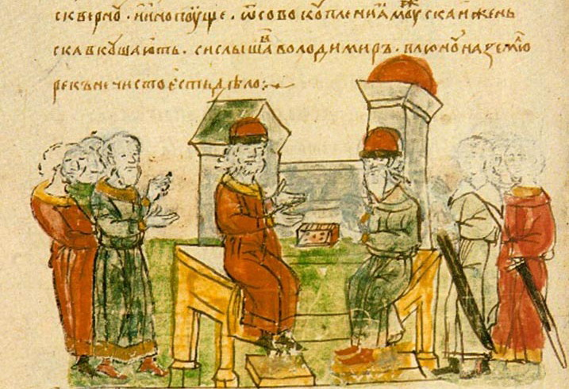
Фрагмент з Радзівілаўскага летапісу: князь Уладзімір гаворыць з візантыйскім філосафам аб хрысціянстве
XI – пач. XIV ст.
Расквітнела старажытнаруская кніжнасць
Да пачатку XIV ст. ва ўсходніх славян была агульная гісторыя і агульная мова — старажытнаруская (але мясцовыя адрозненні ў гаворцы, безумоўна, існавалі). Акрамя таго, пісалі на царкоўнаславянскай мове — стараславянскай мове ва ўсходнеславянскай рэдакцыі.
На беларускіх землях перапісваюцца біблейскія тэксты, ствараюцца летапісы, жыціі святых, казанні. У гэты час жылі Еўфрасіння Полацкая, Кірыла Тураўскі і іншыя беларускія асветнікі. Берасцяныя граматы паказваюць, што пісьмо выкарыстоўвалася і ў побыце.
На беларускіх землях перапісваюцца біблейскія тэксты, ствараюцца летапісы, жыціі святых, казанні. У гэты час жылі Еўфрасіння Полацкая, Кірыла Тураўскі і іншыя беларускія асветнікі. Берасцяныя граматы паказваюць, што пісьмо выкарыстоўвалася і ў побыце.
Пачатак XVI ст.
Францыск Скарына друкуе
першыя беларускія кнігі
першыя беларускія кнігі
У 1517 г. Ф. Скарына друкуе ў Празе «Псалтыр». Да 1525 г. спачатку ў Празе, а потым у Вільні выходзяць і іншыя часткі скарынаўскай Бібліі.
Скарына хацеў зрабіць свае кнігі больш зразумелымі для чытачоў, таму ён тлумачыў на палях некаторыя словы, а час ад часу пераходзіў з царкоўнаславянскай мовы на старабеларускую — у прадмовах, пасляслоўях і вершах, якімі ён дапаўняў біблейскія кнігі (пачатак старабеларускага перыяду — XIV ст.). Для XVI ст. такі дэмакратызм быў рэвалюцыйным.
Скарына хацеў зрабіць свае кнігі больш зразумелымі для чытачоў, таму ён тлумачыў на палях некаторыя словы, а час ад часу пераходзіў з царкоўнаславянскай мовы на старабеларускую — у прадмовах, пасляслоўях і вершах, якімі ён дапаўняў біблейскія кнігі (пачатак старабеларускага перыяду — XIV ст.). Для XVI ст. такі дэмакратызм быў рэвалюцыйным.
| 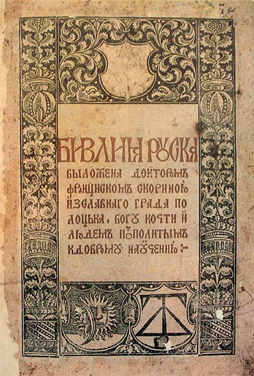 | 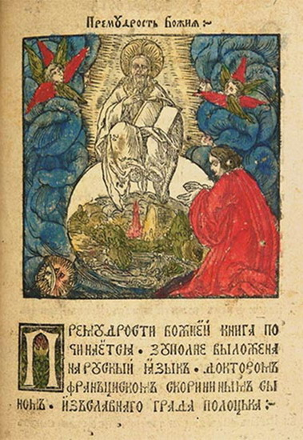 | 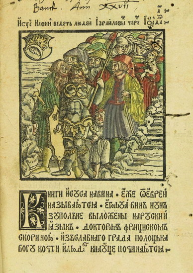 |
На старонках Бібліі Ф. Скарыны можна ўбачыць, што ўжо з'явіліся прабелы, але прыназоўнікі яшчэ часта не аддзяляюцца ад наступнага слова
1529–1588 гг.
Выходзіць Статут ВКЛ
Тры выданні Статута Вялікага Княства Літоўскага былі напісаны на старабеларускай мове. Свецкія выданні былі не так моцна звязаныя з традыцыямі царкоўнаславянскай мовы, як рэлігійныя. Для запісу старабеларускай мовы ў Статуце выкарыстоўвалася традыцыйная кірыліца.
Па-беларуску пачынаюць пісаць не толькі кірыліцай
З XVI–XVII стст.
Татары пішуць на старабеларускай мове арабскай вяззю
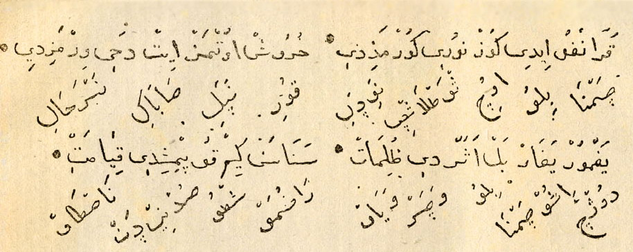
Фрагмент кітаба з музея І. Луцкевіча. Транслітарацыя: «Цэмна было, очы сьветласьці не відзелі. Куры не пелі, сабакі не брэхалі. Дошч ішоу, цемна было, вецер веяш. Разумеу, што судны дзень настау».
У XIV-XV стст. у ВКЛ прыязджаюць татары. З часам яны пераходзяць на мясцовую мову і прыстасоўваюць арабскую графіку для запісу беларускага маўлення, у тым ліку ўводзяць новыя літары. Так з'явіліся кітабы.
Гэтыя загадкавыя на першы погляд тэксты — важная крыніца для вывучэння гісторыі беларускай мовы, бо там відаць яскравыя асаблівасці тагачаснага жывога маўлення. Кансерватыўная кірыліца не дазваляла так поўна адлюстроўваць спецыфіку старабеларускай мовы.
Гэтыя загадкавыя на першы погляд тэксты — важная крыніца для вывучэння гісторыі беларускай мовы, бо там відаць яскравыя асаблівасці тагачаснага жывога маўлення. Кансерватыўная кірыліца не дазваляла так поўна адлюстроўваць спецыфіку старабеларускай мовы.
Другая палова XVI ст.
Прыходзіць лацінка
У канцы XVI ст., пасля ўваходу Вялікага Княства Літоўскага ў склад Рэчы Паспалітай, сталі з'яўляцца першыя помнікі на лацінцы (захавалася невялікая колькасць дакументаў і надпісаў).
З XVII ст. лацінскі алфавіт выкарыстоўваецца ў тэатры. П'есы пісалі па-лацінску і па-польску, а беларуская мова гучала ў інтэрмедыях, якія забаўлялі гледачоў у антрактах. Звычайна інтэрмедыі занатоўвалі польскай графікай, але часам можна заўважыць арыгінальныя напісанні. Напрыклад, беларускі [г] абазначалі то як ch, то як h (апошняе напісанне выкарыстоўваецца і зараз). Так нараджалася беларуская лацінка.
З XVII ст. лацінскі алфавіт выкарыстоўваецца ў тэатры. П'есы пісалі па-лацінску і па-польску, а беларуская мова гучала ў інтэрмедыях, якія забаўлялі гледачоў у антрактах. Звычайна інтэрмедыі занатоўвалі польскай графікай, але часам можна заўважыць арыгінальныя напісанні. Напрыклад, беларускі [г] абазначалі то як ch, то як h (апошняе напісанне выкарыстоўваецца і зараз). Так нараджалася беларуская лацінка.
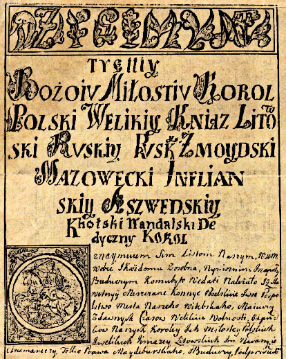
Паводле гэтага дакумента Віцебск атрымаў Магдэбургскае права ў 1597 г.
XIX ст.
Лацінскі алфавіт выходзіць на першы план

Пісьменнасць беларускіх сялян у XIX ст. (паводле суб’ектыўнага меркавання В. Дуніна-Марцінкевіча)
В. Дунін-Марцінкевіч пісаў у цэнзурны камітэт:
«У нашых правінцыях са ста сялян, відаць, можна знайсці дзесяць, якія добра чытаюць па-польску, тым часам з тысячы ледзьве знойдзецца адзін, што ведае рускую мову.
Таму надрукаваць які-небудзь беларускі твор рускімі літарамі;— гэта заперці яго ў куфар, бо… вышэйшы клас грамадства… не возьме ў рукі прастанародную кнігу, а сяляне, можа, і жадалі б чытаць аповесці і апавяданні… але не ведаюць рускія літары і не могуць задаволіць сваё жаданне.
«У нашых правінцыях са ста сялян, відаць, можна знайсці дзесяць, якія добра чытаюць па-польску, тым часам з тысячы ледзьве знойдзецца адзін, што ведае рускую мову.
Таму надрукаваць які-небудзь беларускі твор рускімі літарамі;— гэта заперці яго ў куфар, бо… вышэйшы клас грамадства… не возьме ў рукі прастанародную кнігу, а сяляне, можа, і жадалі б чытаць аповесці і апавяданні… але не ведаюць рускія літары і не могуць задаволіць сваё жаданне.
1859 г.
Цэнзура забараніла друкаваць кнігі на беларускай мове лацінкай
Пераклад «Пана Тадэвуша» А. Міцкевіча на лацінцы быў забаронены. У Расійскай імперыі гэты алфавіт быў звязаны не толькі з рэлігіяй (каталіцтвам), але і з ідэалогіяй і палітыкай. Выбар лацінкі азначаў апазіцыйныя погляды, вальнадумства, заходнюю арыентацыю. Кастусь Каліноўскі мог выбраць толькі лацінскі алфавіт (гл. тэкст яго нелегальнай газеты «Мужыцкая праўда»).
| 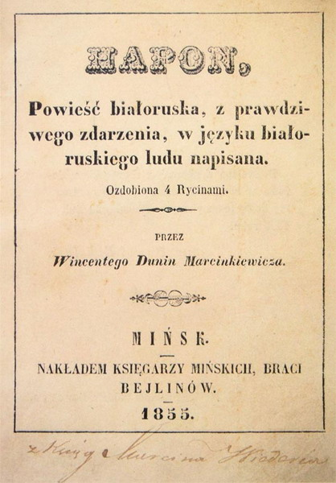 | 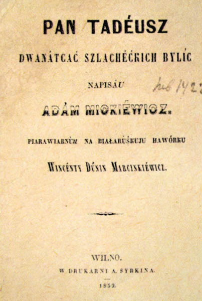 | 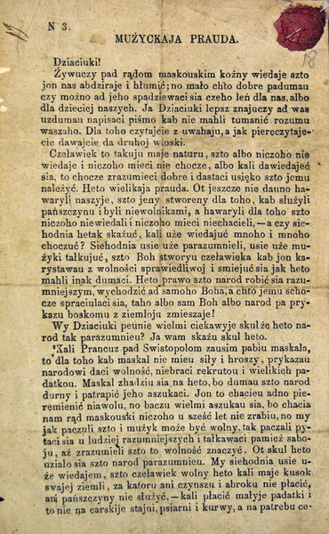 |
Канец XIX – пачатак XX стст.
Кірыліца ці лацінка?
У 1906−1917 гг. было надрукавана не менш як 60 выданняў у двух алфавітах паралельна. Вяліся дыскусіі пра выбар азбукі.
«Пытанні, звязаныя з двума алфавітамі беларускага пісьма, — гэта лакальнае, але канцэнтраванае выражэнне асноўнай праблемы ў гісторыі беларускага народа — праблемы нацыянальна-культурнага і палітычнага самазахавання ва ўмовах „жыцця ў цяні“ Расіі і Польшчы <…> І два алвафіты ў абескроўленай культуры — гэта частка рэальнасці… Беларускае адраджэнне 1906−1918 гг. імкнулася адрадзіць ці выпрацаваць трэці (не польскі і не рускі) пачатак, які б аб'яднаў беларусаў».
Н. Б. Мячкоўская
Калі ў XIX ст. пераважала лацінка,
то на рубяжы XIX—XX стст. — кірыліца
то на рубяжы XIX—XX стст. — кірыліца
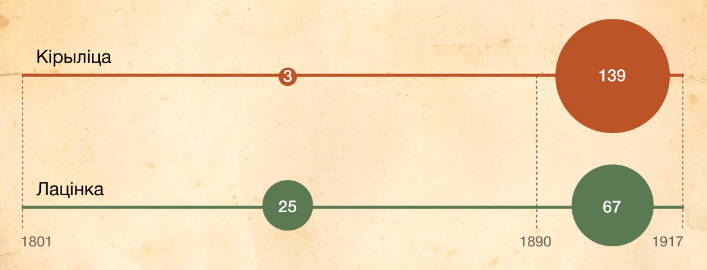
Колькасць уцалелых беларускіх кніг на кірыліцы і лацінцы за два перыяды (падлікі І. А. Гапоненка паводле каталога «Кніга Беларусі: 1517−1917»)
У 30-я гады XX ст. кірыліца стала
адзіным афіцыйным алфавітам
адзіным афіцыйным алфавітам
Потым ідзе праца над арфаграфіяй беларускай мовы — стандартамі правапісу. Але гэта ўжо асобная гісторыя.
З 90-х гадоў XX ст.
Лацінскі алфавіт вяртаецца
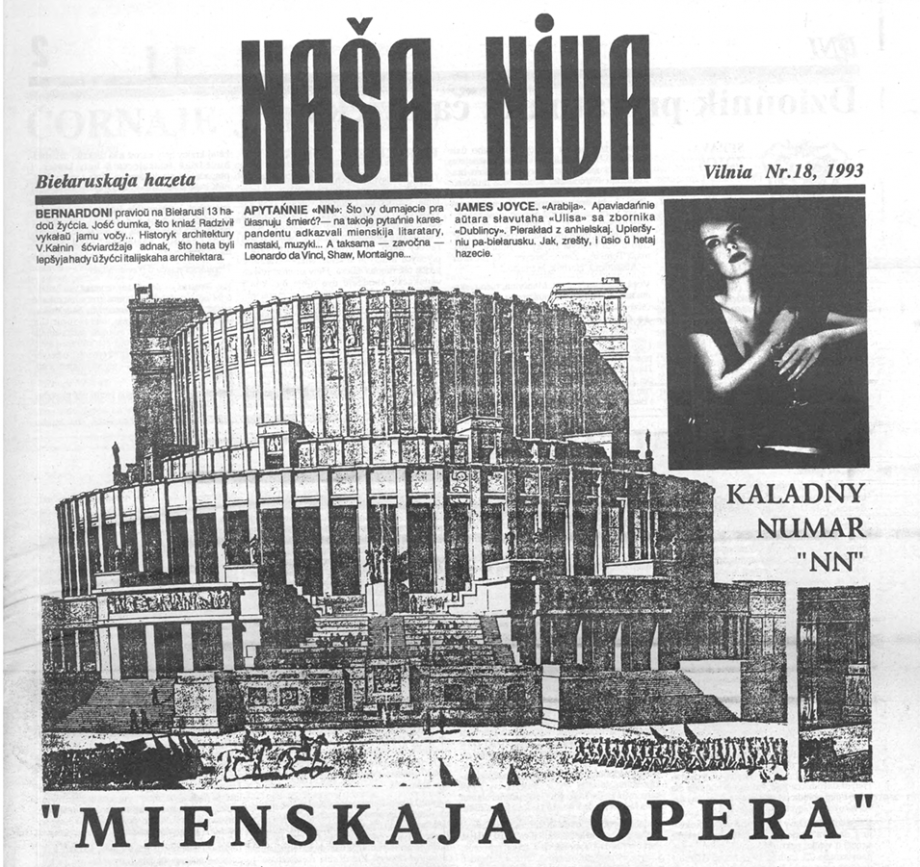
У 1993 г. адзін нумар «Нашай нівы» выйшаў цалкам лацінкай
У другой палове XX ст. пра беларускую лацінку ледзь не забылі: яна выкарыстоўваецца амаль толькі ў эміграцыі. Але ў незалежнай Беларусі зноў узнікае цікавасць да гэтага алфавіта, і ён з'яўляецца ў друкаваных выданнях і інтэрнеце. У той жа час Азербайджан, Туркменістан і Узбекістан афіцыйна пераходзяць на лацінскі алфавіт.
Сёння лацінка — жывы, хоць і неафіцыйны беларускі алфавіт. Некаторыя беларусы выбіраюць яго для штодзённага пісьма. Нават перакладнік Google ведае беларускую лацінку.
Сёння лацінка — жывы, хоць і неафіцыйны беларускі алфавіт. Некаторыя беларусы выбіраюць яго для штодзённага пісьма. Нават перакладнік Google ведае беларускую лацінку.
XXI ст.
На аснове беларускай лацінкі ствараюцца стандарты
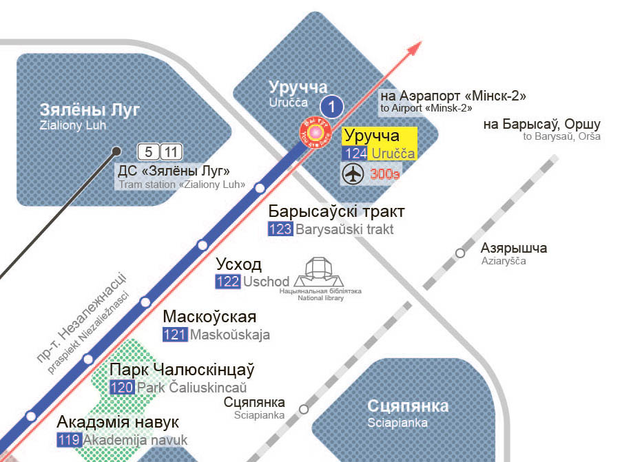
Фрагмент схемы мінскага метрапалітэна 2015 г.
У 2000 г. распрацавалі «Інструкцыю па транслітарацыі геаграфічных назваў Рэспублікі Беларусь літарамі лацінскага алфавіта». Пазней cістэму наблізілі да традыцыйнай беларускай лацінкі. У 2013 г. ААН зацвердзіла стандарт.
Лацінскія надпісы ў мінскім метро, якія вызвалі шмат дыскусій, адпавядаюць гэтаму стандарту. Спрэчкі пра літары не спыняюцца.
Лацінскія надпісы ў мінскім метро, якія вызвалі шмат дыскусій, адпавядаюць гэтаму стандарту. Спрэчкі пра літары не спыняюцца.
II
Шлях беларускай кірыліцы
Славянская азбука была патрэбная, каб перакладаць біблейскія тэксты на стараславянскую (паўднёваславянскую) мову. Зараз кірыліцу выкарыстоўваюць шматлікія народы, у тым ліку і беларусы. Прасочым, як стараславянская кірыліца перетварылася ў беларускую: якія літары дадаліся (+), а якія зніклі (−).
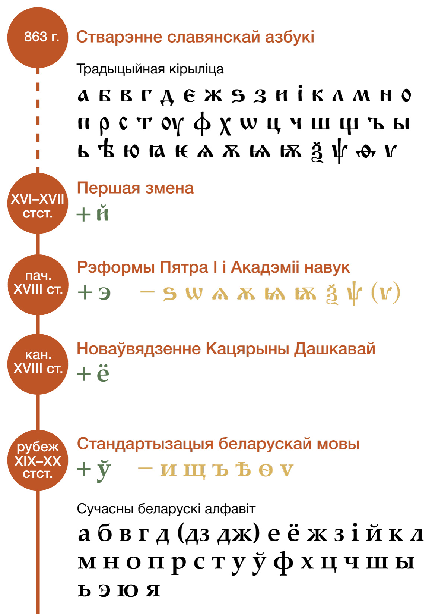
Традыцыйная кірыліца
З’яўленне кірыліцы — неразгаданая загадка. Большасць даследчыкаў лічаць, што Кірыл і Мяфодзій стварылі першую славянскую азбуку — глаголіцу, а потым іх вучні прыдумалі кірыліцу.
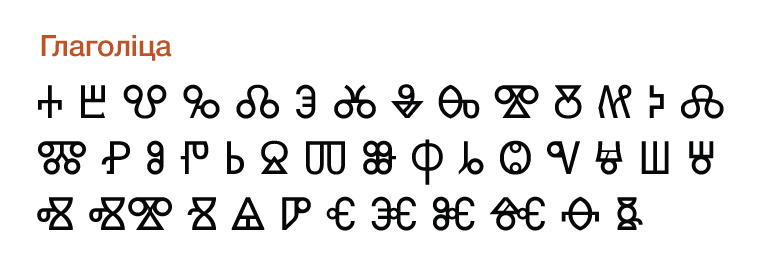
1
Кірылічны алфавіт быў падобны да грэчаскага. З 43 кірылічных літар 23 супадаюць з грэчаскімі. Некаторыя літары выкарыстоўваліся толькі ў грэчаскіх запазычаннях: ѯ = пс, ѱ = кс.
2
З часам некаторыя гукі зніклі, а літары засталіся. Так, юсы (ѧ, ѫ) абазначалі зніклыя насавыя гукі. На месцы яця (ѣ) у беларускай і рускай мовах у большасці выпадкаў пачалі вымаўляць [э].
3
Былі дублетныя літары. Напрыклад, для гука [і] было тры літары: и = і = ѵ, для [з] — дзве: ѕ = з, для [o] — таксама дзве: о = ѡ (часам над амегай зверху ставілі т: ѿ).
4
Некаторыя літары пісаліся не так, як зараз. Напрыклад, а з палачкай наперадзе ператварылася ў я.
5
У літар былі іншыя назвы: а —аз, г. зн. 'я', б — букы 'літара', в — веди 'ведаць' і г. д.
6
Не адрозніваліся вялікія і малыя літары.
7
Лік абазначалі літарамі (для гэтага над імі ставілі спецыяльныя знакі): а = 1, в = 2, г = 3, і = 8, и = 10, ц = 900… Літары, якіх не было ў грэчаскай мове (б, ж, ш i г. д.), не мелі лікавага значэння.
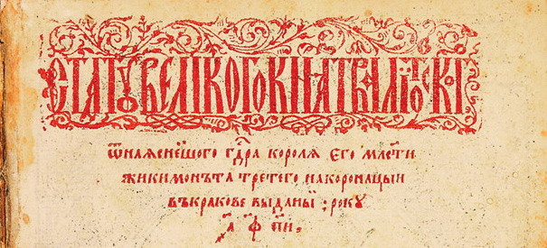
Літара а са спецыяльным знакам знізу абазначала 1 000, ф – 500, п – 80, а и – 8. Гэта выданне 1588 г.
Першая змена
Літара й спачатку называлася «и з краткай» (кратка — гэта надрадковы значок). Дакладна вызначыць дату ўзнікнення й цяжка, у алфавіт літару доўгі час не дадавалі, і зараз яна займае «маргінальнае» становішча ў азбуцы, напрыклад не выкарыстоўваецца ў спісах.
Пятроўская рэформа
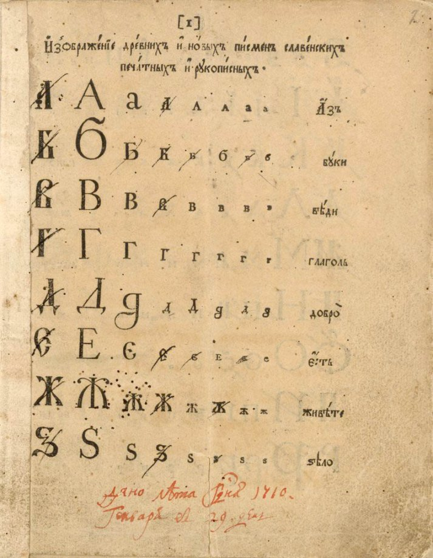
Грамадзянская азбука з выпраўленнямі Пятра I (1710 г.)
У 1707−1710 гг. Пётр стварае грамадзянскі шрыфт для свецкага друку. Пётр таксама набліжае абрысы кірылічных літар да лацінскіх, уводзіць арабскія лічбы, і таму стала магчымым пазбавіцца ад некаторых непатрэбных літар. Акрамя таго, сталі адрознівацца вялікія і малыя літары.
Праца над алфавітам працягваецца ў Акадэміі навук. Цікава, што Акадэмія прыняла не ўсе пятроўскія прапановы. Напрыклад, Пётр выключыў іжыцу (ѵ) з алфавіта, а Акадэмія яе вярнула.
Часам кажуць, што грамадзянскі шрыфт прыдумаў Ілья Капіевіч (Капіеўскі) — беларус, які жыў у Амстэрдаме. У гэтай версіі няма доказаў, але зразумела, што пошукі Капіевіча былі блізкія пятроўскім.
З 70-х гадоў XVIII ст. новы алфавіт прыходзіць на Беларусь: свецкія кнігі грамадзянскім алфавітам друкуе Магілёўская друкарня.
Праца над алфавітам працягваецца ў Акадэміі навук. Цікава, што Акадэмія прыняла не ўсе пятроўскія прапановы. Напрыклад, Пётр выключыў іжыцу (ѵ) з алфавіта, а Акадэмія яе вярнула.
Часам кажуць, што грамадзянскі шрыфт прыдумаў Ілья Капіевіч (Капіеўскі) — беларус, які жыў у Амстэрдаме. У гэтай версіі няма доказаў, але зразумела, што пошукі Капіевіча былі блізкія пятроўскім.
З 70-х гадоў XVIII ст. новы алфавіт прыходзіць на Беларусь: свецкія кнігі грамадзянскім алфавітам друкуе Магілёўская друкарня.
Гісторыя ё
Днём народзінаў ё часам называюць 1797 г., калі гэта літара з’явілася ў альманаху М. Карамзіна. Менавіта Карамзін зрабіў шмат для яе папулярызацыі. Але ў алфавіце літара з’явілася дзякуючы К. Дашкавай. Падрабязней пра гісторыю ё можна пачытать тут.
У беларускай мове, у адрозненне ад рускай, трэба абавязкова пісаць ё.
У беларускай мове, у адрозненне ад рускай, трэба абавязкова пісаць ё.
Сучасны беларускі алфавіт
У рускай мове ў 1917−1918 гг. правялі рэформу графікі і арфаграфіі, якая дазволіла пазбавіцца ад непатрэбных літар і спрасціць пісьмо.
Стандарта беларускай мовы на той момант не існавала (адзіных падручнікаў не было, і людзі пісалі па-рознаму), таму змены ў графіцы праходзілі стыхійна, без рэформ.
Стандарта беларускай мовы на той момант не існавала (адзіных падручнікаў не было, і людзі пісалі па-рознаму), таму змены ў графіцы праходзілі стыхійна, без рэформ.
Сімвал беларускай азбукі — літара ў
1
Літару ў прапанаваў рускі філолаг П. Бяссонаў. Яе можна ўбачыць у кніге П. Шэйна «Беларускія народныя песні…» (1874 г.).
2
Такая літара таксама ёсць у некаторых мовах, на якіх гавораць у Азіі, напрыклад у дунганскай. Але ў іншых славянскіх мовах ў няма.
3
Маглі быць і іншыя адметныя беларускія літары. Так, прапаноўвалі замяніць дыграфы дз і дж, гл. артыкул У. Дубоўкі «Проэкт літар для згукаў „дз“ і „дж“».
Гісторыя беларускіх літар працягваецца. Нашы сучаснікі ўдасканальваюць правапіс, ствараюць шрыфты, пішуць кнігі. А азбука — гэта першааснова.
Асноўныя крыніцы
Беларуская мова і мовазнаўства: ХІХ стагоддзe / пад агул. рэд. М. Р. Прыгодзіча. Мінск, 2013.
Истрин, В. А. 1100 лет славянской азбуки. М., 1982.
Кніжная спадчына Беларусі / складальнік А. А. Суша; фота А. П. Дрыбаса. Мінск, 2014.
Мечковская, Н. Б. Зачем одному народу две азбуки? (Кириллица и латинка в коллизиях белорусского возрождения) // Мечковская, Н. Б. Белорусский язык: социолингвистические очерки. Мюнхен, 2003. С. 47−62.
Супрун, А. Е. Происхождение славянской письменности (Кирилло-мефодиевская проблематика) / Супрун, А. Е. Выбраныя працы. Мінск, 2013. С. 238−273.
Шакун, Л. М. Гісторыя беларускай літаратурнай мовы. Мінск, 1984.
Истрин, В. А. 1100 лет славянской азбуки. М., 1982.
Кніжная спадчына Беларусі / складальнік А. А. Суша; фота А. П. Дрыбаса. Мінск, 2014.
Мечковская, Н. Б. Зачем одному народу две азбуки? (Кириллица и латинка в коллизиях белорусского возрождения) // Мечковская, Н. Б. Белорусский язык: социолингвистические очерки. Мюнхен, 2003. С. 47−62.
Супрун, А. Е. Происхождение славянской письменности (Кирилло-мефодиевская проблематика) / Супрун, А. Е. Выбраныя працы. Мінск, 2013. С. 238−273.
Шакун, Л. М. Гісторыя беларускай літаратурнай мовы. Мінск, 1984.

{kind=link}
{kind=link}
{kind=link}